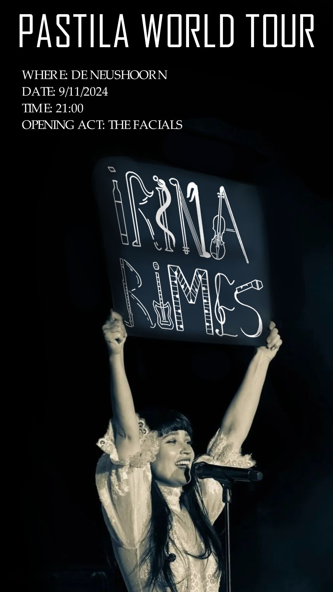

De Bote Poster
This poster was created for our first design project at University to present our theme of The Skene Brothers and the 06 telephone lines. It showcases a semi-nude woman in a fluid motion with simple graphical elements and following the color scheme of the project, with the intention to capture attention and curiosity and draw the target group to the project.

Irina Rimes Poster
A poster made as part of the 10 Design Challenges, where we had to focus on typography. I sketched and drew the letters of the artist's name using elements that fit her image and style (musical elements, wine bottle from music lyrics) and I kept the rest simple as to highlight the work that went into the custom-text.